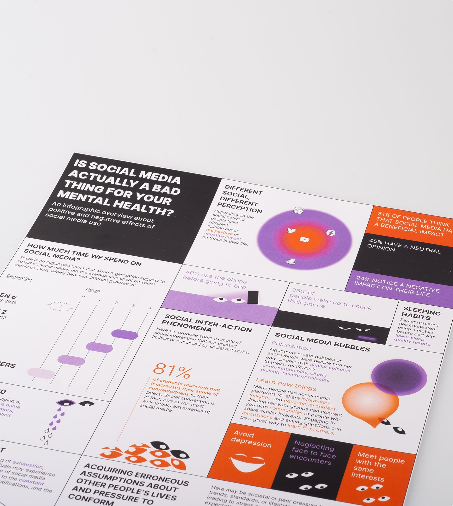
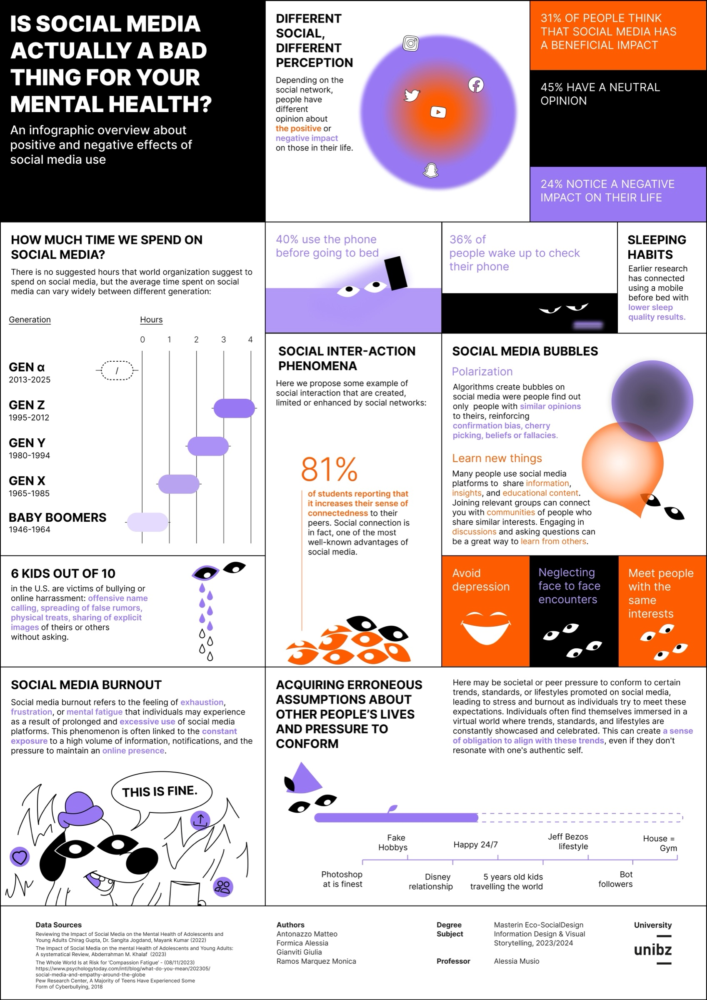

Social Media
Are they actually a bad thing?

Once in your life you asked yourself whether it's a good idea or not to spend all this time on social media. Social media allow us to make new connections and discover new things about our favorite hobby or software we use at work. It is indeed true also the opposite: we can find toxic contents, AI slop and generally free hate speech laying around here and there.
Research & Infographic
With my colleagues, under the supervision of Prof. Alessia Musio, we decided to analyze some papers on the topic studying positive and negative effects of social media on people. With the data gathered by the academic community I have realized an infographic poster on the pros and cons of using social media.

Data Physicalization
After realizing the poster, we decided to "physicalize" the result of our research. We decided to screenshot the reels we encounter in one of the countless scrolling sessions and print them. The physicalization is an art piece that wants to make more tangible the flow of data that everyday we consume.